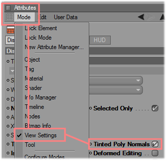

3D objects can be created with 3D CAD programs. Please note, that the amount of polygons affects the performance because for each polygon the projection has to be calculated. The lower the number of polygons the better is the frame rate.
MA VPU supports the following formats for 3D objects:
Note the following regulations:
The following example shows the creation of a cylinder with the 'Cinema 4D’ (Copyright by MAXON Computer GmbH) software.
| Insert an object of type 'Cylinder’ | |
| Set the orientation to 'Y+’. For a correct visualization in MA VPU Z is the depth, Y the vertical and X the horizontal axis. | |
| Make the object editable. | |
| Select not used polygons… | |
| and delete them. | |
|  | Set the visibility of normals on. |
| Copy the object… | |
| and reverse the normals of the copy. | |
| Select both cylinder objects and connect them to one new cylinder. | |
| The old cylinder objects can be deleted. | |
| Now you can see two objects with normals in both directions. | |
| Check the orientation of the resulting object. | |
| Insert a new material for the texturing. | |
| Assign an image to the texture and the material to the object. | |
| Adjust the texture mapping parameter. | |
| Assign the UV coordinates for the texture mapping. | |
| Export the object to Direct 3D format. Objects created in this way can be added to the Channel Set via the context menu in the '3D Objects view with the right mouse button. |
|
| Note: At the export-options of newer releases of Cinema4D, you need to switch off “Save Templates” in order to make the 3D-object visible at the VPU. |